Hello, I'm Sam!
About Me.
I was born on the 19 November 2009 in Dublin, Ireland. I have two sisters (Chloe and Caoimhe) with myself being the middle child of the family. I am thirteen years old, and I am going into second year this coming September. I speak English, Irish, and I am also currently learning German in my school. At the moment, I go to Coláiste Cois Life in Lucan, and beforehand I went to Gaelscoil Naomh Pádraig just next door to Coláiste Cois Life. I used to play football with Palmerston FC when I was younger, however I left a few years after I joined since they demoted me to the ‘B’ team. I now play for an All-Irish GAA team called ‘Na Gaeil Óga’. We are mostly situated in Catherine’s Park, which is split between Lucan and Leixlip. In my free time, I like to watch youtube, TV or play computer games. Recently, I started to watch every episode of Spongebob since I subscribed to Paramount Plus which has every season.
My Hobbies
•GAA: Gaelic Football, Hurling
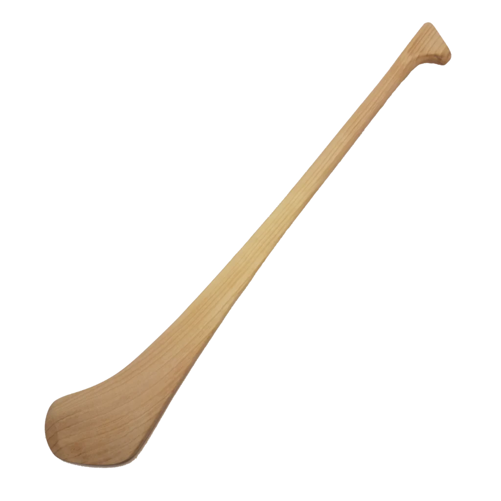 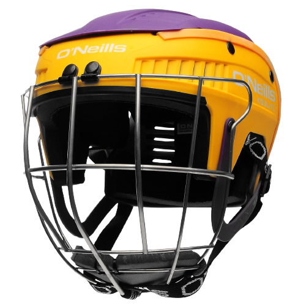 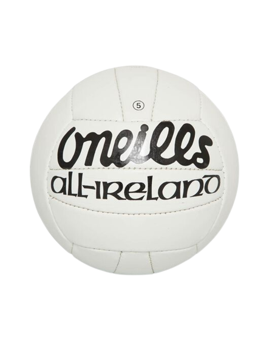 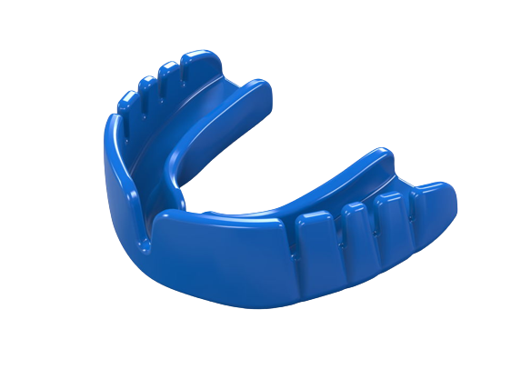•Music: Violin
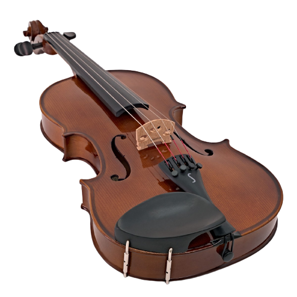 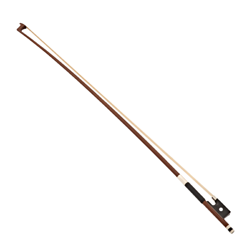.png)
My Interests
•TV: Spongebob Squarepants
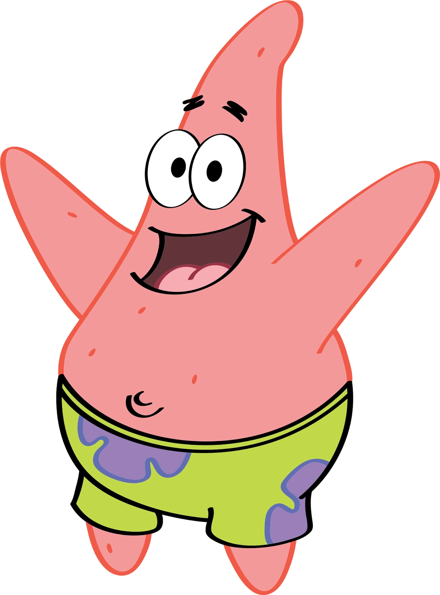 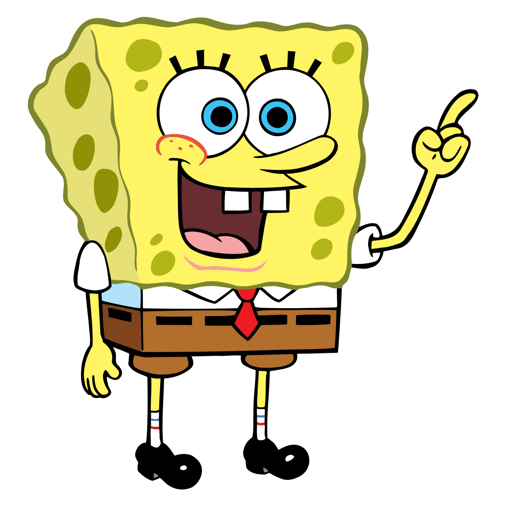 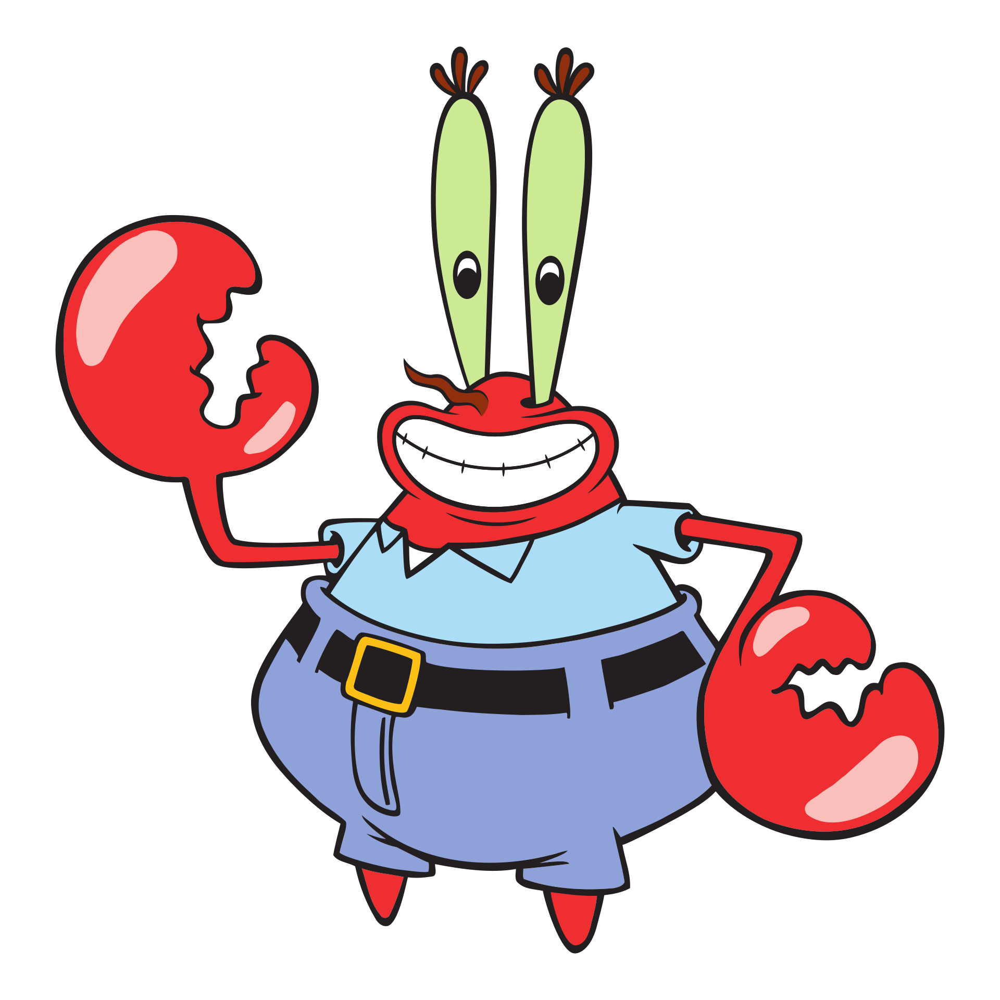 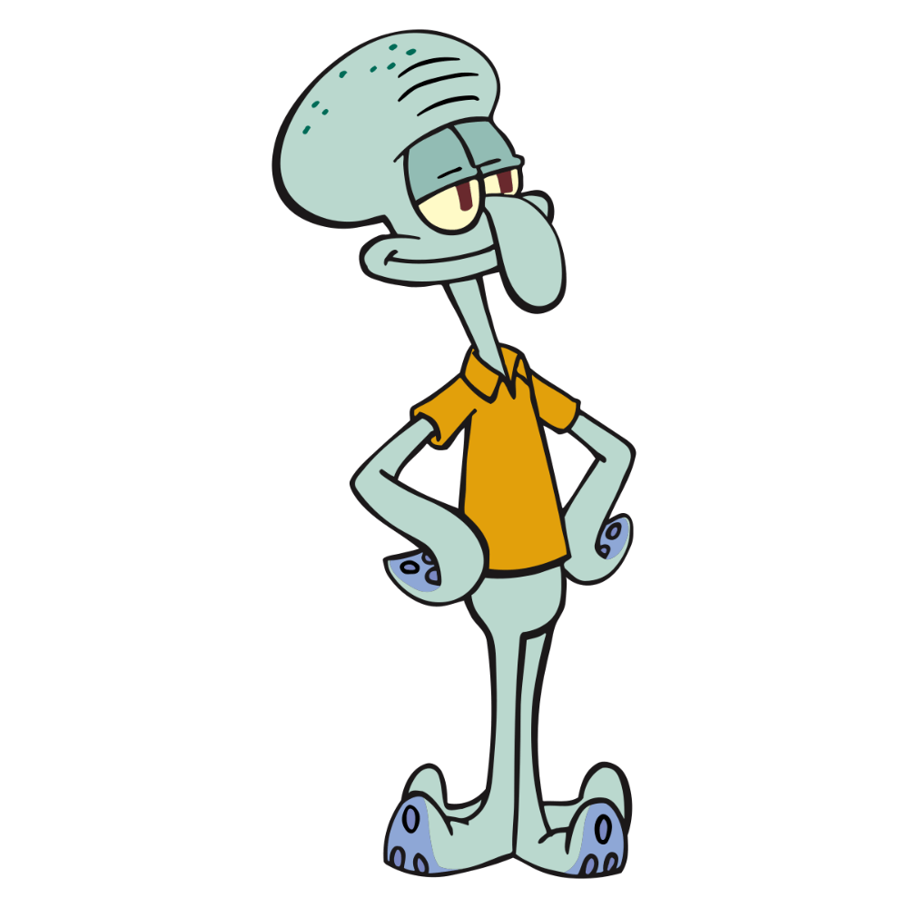•Computer Games
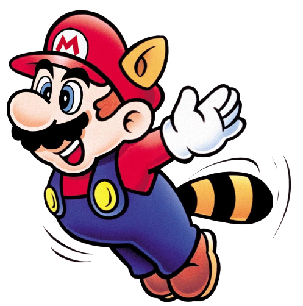 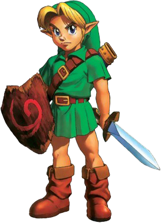
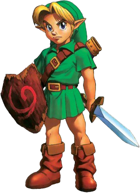
•Cycling
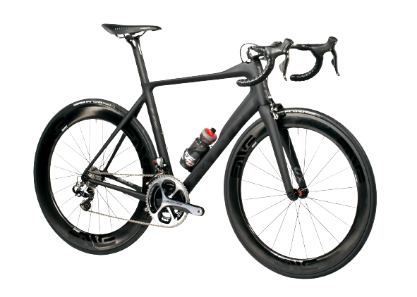 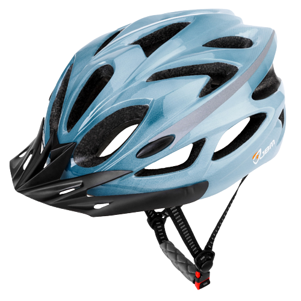